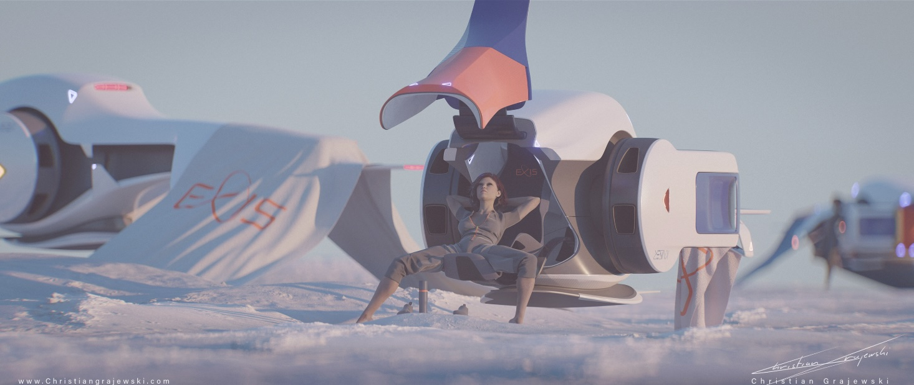

Underground Sessions Vol. 4: what about your cooking skills
you yelled yes yes yes to the breakcore one, so here we go bro
Read More →Stories, mixes, and insights from the scene
 and ACTION!
and ACTION!
you yelled yes yes yes to the breakcore one, so here we go bro
Read More →Una estructura sonora poliédrica de 26 facetas, 48 vértices y 72 aristas. No es una mezcla—es la erección de un poliedro semiregular en el vacío del dancefloor. Arquitectura geométrica oscura y futurismo cuántico.

An academic‑fiction paper that models human harmony dilemmas as singularities in a manifold of friendship, blending modern geometry with a magical‑romantic narrative.
Read More →
today we need to start slowing down and in the next to entries we will come to a full stop, right?, you know how they work, they destroy and then reappear, in the mean time remember that the honey moon is coming to an end
Read More →Filia revela cómo Flash Back teje espirales temporales, convirtiendo combos en rituales recursivos de geometría sagrada.
Explora los Fractales →Explore how Magicurl Filia's ability manifests as temporal fractals—where every blocked attack creates a double helix of time-streams, enabling simultaneous past and future states through spiritual minimalism.
A futuristic treatise on how Soul Sister Annie's ability represents an 8-vertex polytope in consciousness-space, blending sacred geometry with spiritual minimalism for ultimate combat efficiency. Discover quantum probability states through geometric transforms and fractal consciousness.


Dive deep into the latest installment of my monthly mix series, exploring the darker corners of our streets with tracks from emerging underground artists and established pioneers... placing light on them with some graffiti ideas
Read More →
Discover the gear and software that defined the sound of the 2020's, from fruits to essential magic tricks
Read More →
Dive deep into the latest installment of my monthly mix series, exploring the darker corners of our streets with tracks from emerging underground artists and established pioneers... placing light on them with some graffiti ideas
Read More →